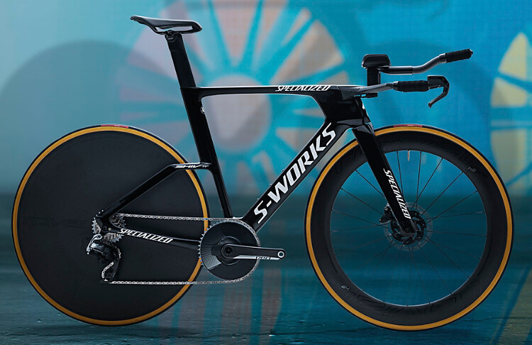
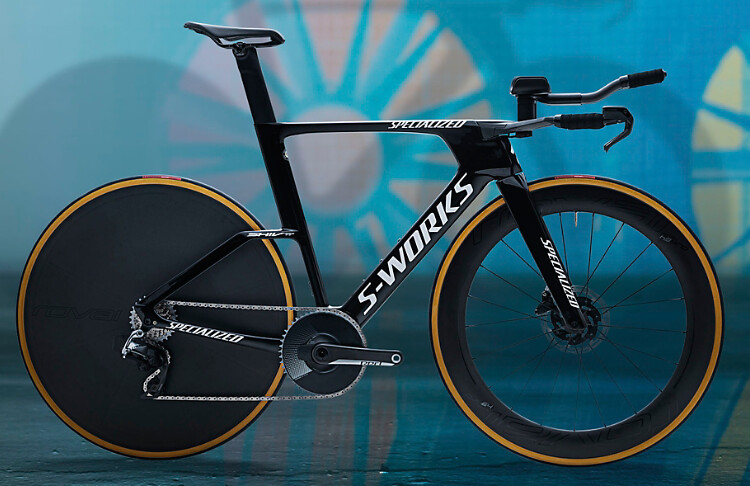

HTML es un lenguaje de Marcas de Hipertexto que define el significado y la estructura del contenido web.
Son secciones de código que se repiten en múltiples lugares con poca o ninguna variación.
Utilizamos esta etiqueta para cambiar de tamaño los diferentes títulos o mensajes que escribamos en nuestra página web según queramos que tenga más importancia o menos.
Utilizamos esta etiqueta para crear párrafos y separar las líneas que queramos.
En esta tienda podrás encontrar diferentes tipos de bicicletas de las mejores marcas de todo el mercado.
Gracias a esta tienda online podrás encontrar la bici de tus sueños.
Puedes fitrar que tipo de bici según el material, el color, la talla o la marca.
Utilizamos esta etiqueta para poner una palabra o frase en negrita.
Esta página web trata de BICIS DE CARRETERA.
Utilizamos esta etiqueta para poner una palabra o frase en cursiva.
Esta página web ha sido creada por Luis Sánchez González.
Se divide la información en puntos o signos indicando una misma importancia la lista creada.
Puedes fitrar que tipo de bicicleta desea según:
Se divide la información en números según la importancia que tenga en la lista creada.
Algunas de las marcas más vendidas y conocidas son:
Se utiliza para crear listas para separar la información.
Es la marca más conocida por la comunidad de bicis debido a sus bicis de gran calidad en caunto a sus materiales, aunque no es muy económica. Esto es porque busca tener los mejores componentes del mercado teniendo un precio muy alto.
Puedes encontrar modelos de bicicletas desde ligeras a pesadas.
Sirve para añadir una foto o imagen a nuestra página web mediante su url.
&w=2500&h=1406&fmt=auto) 
